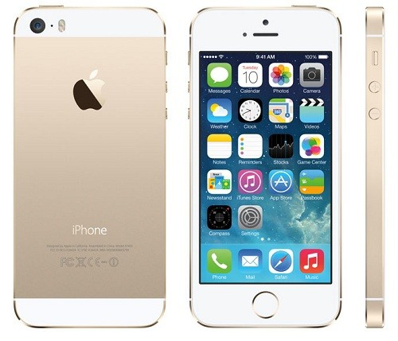

 O iPhone 5s é a sétima geração do iPhone anunciado no dia 10 de Setembro de 20131 em um evento na sede da Apple Inc. em Cupertino, na Califórnia. O aparelho conta com um sensor de digitais (Touch ID) e a Apple diz ser o primeiro celular com um processador [[64 bits]. O processador 64 bit, de acordo com a empresa, deixa o Smartphone duas vezes mais rápido que seu antecessor, o iPhone 5. Além das cores tradicionais preta e branca, agora o aparelho pode ser encontrado também na cor dourada.
Seu lançamento ocorreu no dia 20 de Setembro de 2013 em nove países: Estados Unidos, Austrália, Canadá, China, França, Alemanha, Japão, Cingapura e Reino Unido, e teve na sua primeira semana uma venda de 9 milhões de unidades dos modelos iPhone 5s e 5c2 . Posteriores lançamentos do aparelho ocorrerão, sendo lançados até o mês de novembro de 2013 em mais de 51 países.3 Agora disponível em três cores: cinza espacial, dourado e prateado. Ampliando assim a gama de opções de design para gostos.